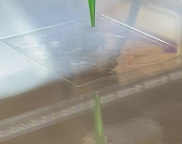

1. The important shift from material property to device behavior
One of the most valuable lessons from the droplet literature is that a liquid-metal device is never defined only by the alloy it uses. A device emerges when a property is turned into a repeatable behavior. Conductivity becomes a working interconnect only after path formation is controlled. Fluidity becomes self-healing only when a system architecture allows broken paths to reconnect. Surface tension becomes useful only when the resulting droplet geometry can be patterned or activated on demand. The device perspective therefore begins one step after materials selection.
This is why the phrase “from droplets to devices” is so useful. It reminds students that droplets are not the final result. They are an engineered intermediate state. Once the metal is in droplet form, it can be positioned, dispersed, coated, gated, merged, activated, or embedded. Each of those operations opens a different device class.
2. Processing route matters because it defines what can be controlled later
Device behavior is already constrained at the fabrication stage. Drop-on-demand and molding methods are useful when placement and geometry must be tightly controlled. Microfluidic approaches matter when researchers need continuous droplet production with narrower size distribution. Sonication and shearing are especially important for composite and ink preparation because they create large populations of microdroplets or nanodroplets with interface-rich behavior. Embossing and other local activation methods become critical when the goal is to start from a dispersed insulating state and then selectively create conductive paths only where needed.
Students should interpret these methods not as a menu of equivalent options but as different commitments. A fabrication route determines droplet size, throughput, spatial order, oxide exposure, and how easily the system can later be activated into a working device. In that sense, processing is part of device design from the beginning.


3. Sensors, circuits, and switches all depend on how the liquid-metal phase is reorganized
The literature on sensors shows that liquid metal is valuable when mechanical deformation can be translated into an electrical change without sacrificing softness. Pressure, strain, tactile, and gas sensors do not all use the same mechanism, but they often depend on a change in capacitance, resistance, percolation, or interfacial contact. The droplet or network structure is therefore central. The liquid-metal phase must be arranged so that deformation produces a readable signal rather than random electrical noise.
The same logic applies to circuits and switches. A soft conductor is not enough. The field has developed ways to move droplets, merge droplets, or activate percolated paths so that a device can turn on, turn off, reroute, or respond to heat. Some systems behave like electrical switches, while others function as thermal switches or reconfigurable conductors. What unifies them is that the device response comes from a controlled transition in the organization of the liquid-metal phase.
4. Regenerative electronics show what device-level maturity looks like
The self-healing and recyclable composite work is valuable because it pushes the conversation beyond one-time demonstration of conductivity. It asks whether a soft electronic system can survive damage, recover useful behavior, be rewired, and even be recycled into a new device. That is a much stronger standard. It means the liquid-metal phase must not only conduct; it must participate in a lifecycle strategy.
For students, this is an important shift in perspective. A device paper is strongest when it does not stop at “the material stretches.” It becomes much more convincing when it asks what happens after repeated use, after tearing, after reconfiguration, or after the end of the original design purpose. Liquid metal is especially promising in this area because its mobility allows conductive pathways to be reorganized instead of only broken.
5. EMI shielding shows where the field is heading next
Electromagnetic shielding broadens the meaning of liquid-metal devices. Here the target is not only soft conduction or sensing, but controlled interaction with electromagnetic waves. This requires another level of design because shielding performance depends on reflection, absorption, interfacial polarization, conductive-network formation, and sometimes magnetic loss. As a result, the newest work increasingly uses architectured composites rather than simple liquid-metal traces.
This matters because it shows the field maturing toward multifunctional systems. A future liquid-metal platform may need to conduct, deform, survive damage, spread heat, and shield electromagnetic noise at the same time. That is a harder design problem, but it is also exactly why liquid-metal research remains active and strategically useful.
6. The practical reading strategy for students
When reading device papers, students should always ask what structural change inside the material produces the claimed function. Is the key event droplet deformation, droplet coalescence, field-driven motion, selective percolation, or interfacial reaction? What form of activation is required? What failure mode would end the function first? And most importantly, is the reported behavior tied to realistic loading, repeated use, and system integration?
Once these questions become routine, device papers stop looking like unrelated demonstrations. They become different answers to the same engineering challenge: how to organize a liquid conductive phase so that function remains controllable under soft, damaged, or dynamically changing conditions.
7. Outlook for device-oriented liquid-metal research
The outlook suggested by the current papers is broader than the earliest generation of soft-conductor studies. The field is moving toward devices that are multifunctional, repair-aware, and system-ready. Reliability under repeated loading, compatibility with complex substrates, and the ability to reconfigure or recycle a device after damage are becoming central criteria. Shielding research extends that trend even further by pushing liquid-metal systems into roles that require structured electromagnetic control in addition to softness and conduction.
For students, this means future device work will probably reward integration more than isolated novelty. The strongest contributions are likely to come from systems that connect process control, interfacial design, functional response, and realistic validation rather than optimizing only one metric in isolation.